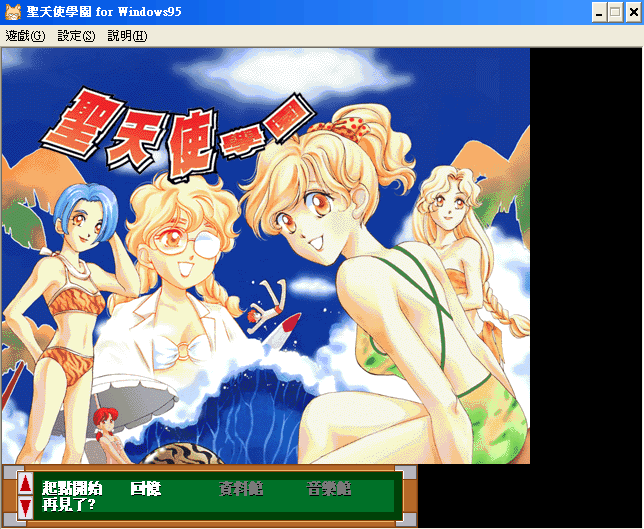
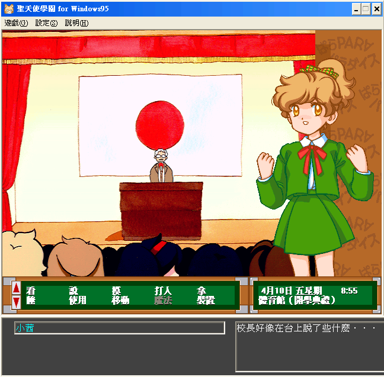
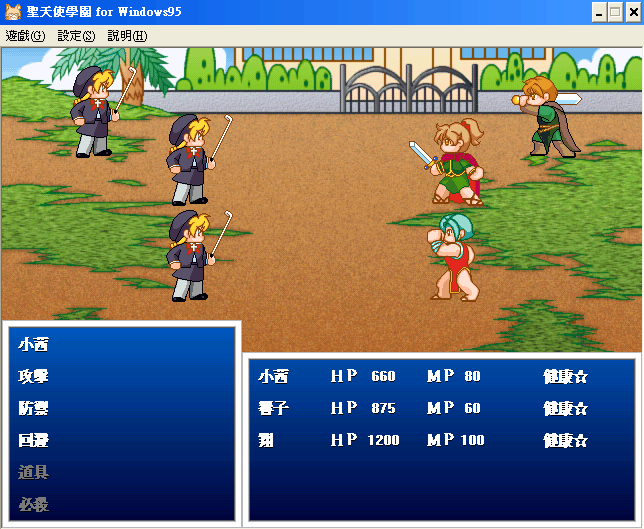

名稱：聖天使學園／聖天使學院 (Para Para Paradise，中文版)
簡介：Family 1997年出品的故事閱讀遊戲，兼具養成、冒險、角色扮演等多種元素，1999年
由富峰群中文化，並委由智冠發行。遊戲中各項事件的發生與劇情的走向，均取決於
玩家在每個時間點的動作 [待補]。



保護：光碟
說明：
1.每個動作都會消耗一定時間。
2.要存檔必須回到房間，選[裝置]-[晚安]，即可存檔。